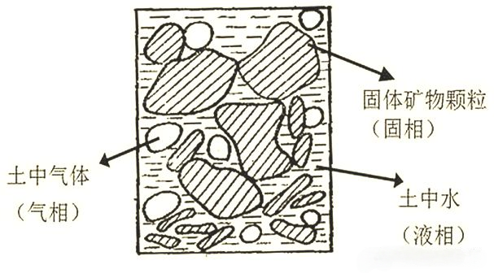
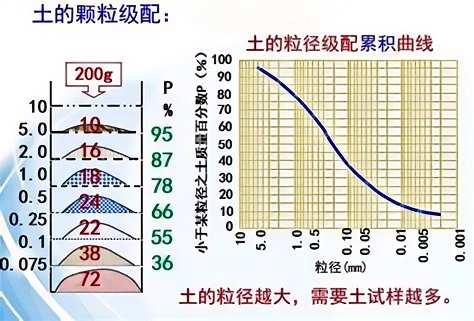
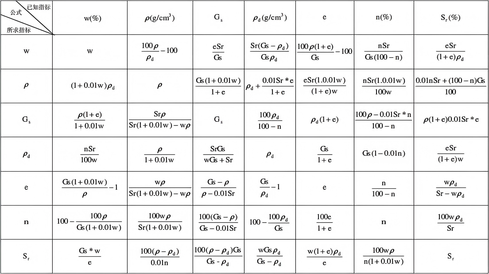
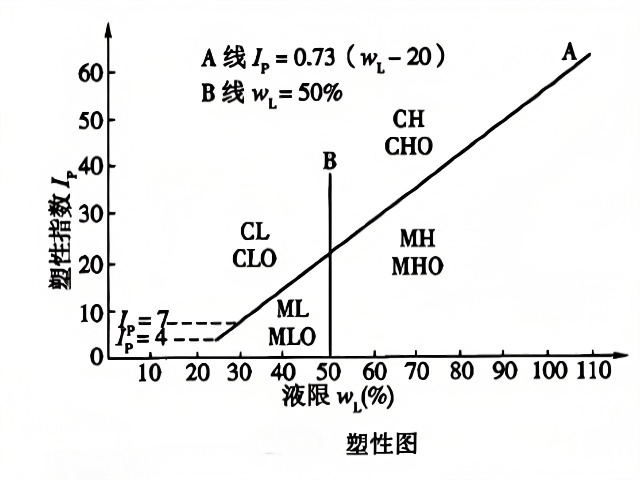
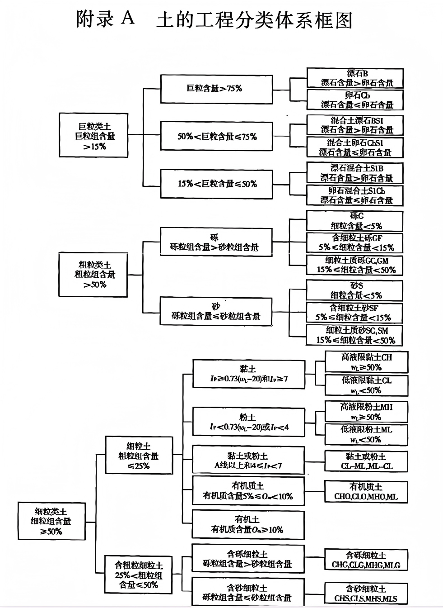

1.1 土的形成与结构
土是地球表面岩石经风化、剥蚀、搬运、沉积等地质作用形成的松散沉积物。
1.1.1 风化作用
风化作用分为物理风化、化学风化和生物风化：
- 物理风化：岩石在温度变化、冻融循环等物理因素作用下破碎
- 化学风化：岩石与水、氧气等发生化学反应而分解
- 生物风化：植物根系生长、动物活动等对岩石的破坏
1.1.2 土的结构
土的结构分为单粒结构、蜂窝结构和絮状结构：
- 单粒结构：粗粒土（如砂、砾）的主要结构形式
- 蜂窝结构：粉土的常见结构形式
- 絮状结构：黏土的典型结构形式
注意
土的结构对其工程性质有显著影响。例如，絮状结构的黏土具有较高的压缩性和较低的强度。
1.2 土的三相组成
土是由固体颗粒、水和气体组成的三相体系。

图1.1 土的三相组成示意图
1.2.1 固体颗粒
固体颗粒是土的主要组成部分，决定了土的基本性质。
- 粒径：颗粒的大小，通常用筛析法或沉降法测定
- 颗粒级配：土中各粒组的相对含量，用级配曲线表示
- 矿物成分：原生矿物（如石英、长石）和次生矿物（如黏土矿物）

图1.3 土的颗粒大小分布曲线
1.2.2 土中水
土中的水按物理化学作用分为：
- 结合水：强结合水（吸着水）和弱结合水（薄膜水）
- 自由水：重力水和毛细水
1.2.3 土中气体
土中的气体主要有：
- 自由气体：与大气相连通的气体
- 封闭气体：被土颗粒或水膜包围的气体
1.3 土的物理性质指标
土的物理性质指标反映了土的三相组成比例关系，是土力学计算的基础。
1.3.1 基本物理性质指标
- 土粒比重（Gs）：土粒质量与同体积4℃水的质量之比
- 天然密度（ρ）：土的总质量与总体积之比
- 干密度（ρd）：土的固体颗粒质量与总体积之比
- 含水率（w）：土中水的质量与固体颗粒质量之比
- 孔隙比（e）：土中孔隙体积与固体颗粒体积之比
- 孔隙率（n）：土中孔隙体积与总体积之比
- 饱和度（Sr）：土中水的体积与孔隙体积之比

图1.2 土的物理性质指标关系图
孔隙比 e = V_v / V_s
孔隙率 n = V_v / V × 100%
饱和度 S_r = V_w / V_v × 100%
要点
这些物理性质指标之间可以相互换算，掌握它们之间的关系对于土力学计算非常重要。
1.4 土的物理状态指标
土的物理状态指标反映了土的软硬、松密等物理状态。
1.4.1 无黏性土的密实度
无黏性土（如砂土）的密实度指标：
- 孔隙比：孔隙比越小，土越密实
- 相对密实度（Dr）：反映砂土在天然状态下的密实程度
- 标准贯入试验锤击数（N）：现场测试指标
相对密实度 D_r = (e_max - e) / (e_max - e_min)
1.4.2 黏性土的稠度状态
黏性土的稠度状态指标：
- 液限（wL）：土从可塑状态过渡到流动状态的界限含水率
- 塑限（wP）：土从半固体状态过渡到可塑状态的界限含水率
- 缩限（wS）：土从固体状态过渡到半固体状态的界限含水率
- 塑性指数（IP）：液限与塑限的差值
- 液性指数（IL）：表示黏性土软硬程度的指标

图1.4 土的可塑性指标关系图
塑性指数 I_P = w_L - w_P
液性指数 I_L = (w - w_P) / (w_L - w_P)
1.5 土的工程分类
土的工程分类是根据土的颗粒组成、塑性指数等指标将土分为不同的类别，以便于工程应用。

图1.5 土的工程分类体系
1.5.1 《建筑地基基础设计规范》（GB 50007-2011）分类方法
根据颗粒级配和塑性指数，土分为：
- 岩石：未风化或微风化的岩石
- 碎石土：粒径大于2mm的颗粒含量超过总质量50%的土
- 砂土：粒径大于2mm的颗粒含量不超过总质量50%，且粒径大于0.075mm的颗粒含量超过总质量50%的土
- 粉土：粒径大于0.075mm的颗粒含量不超过总质量50%，且塑性指数IP≤10的土
- 黏性土：塑性指数IP>10的土
- 特殊性土：软土、人工填土、膨胀土等
1.5.2 国外分类方法简介
- USCS（美国统一土分类系统）
- AASHTO（美国公路与运输协会）分类系统
知识拓展
不同的工程领域可能采用不同的土分类标准，实际工程中应根据具体情况选择合适的分类方法。
本章小结
- 土是由固体颗粒、水和气体组成的三相体系
- 土的物理性质指标反映了土的三相组成比例关系
- 无黏性土的密实度和黏性土的稠度状态是重要的物理状态指标
- 土的工程分类是工程应用的基础